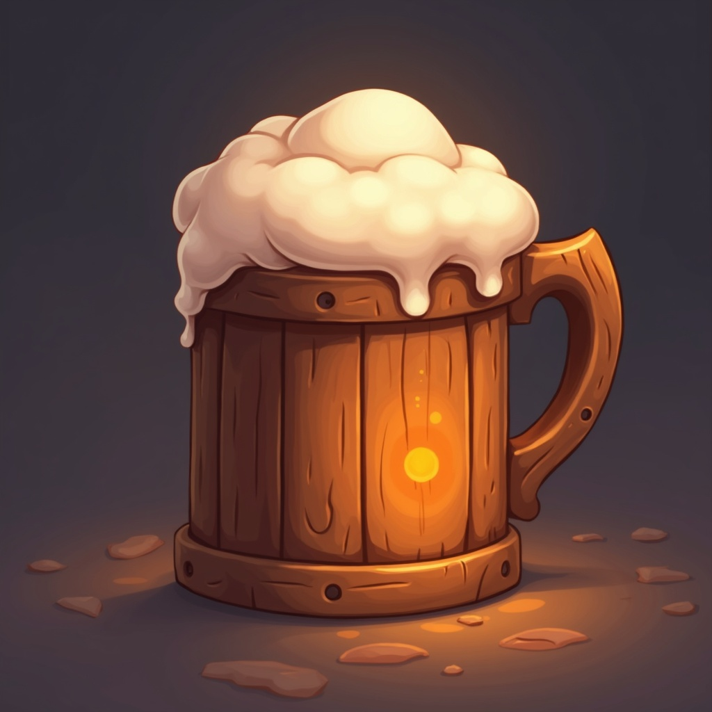

a wanderer arrives in the vale of Veridia — gather, scout, trade, and claim ground
earn tokens at the notice board, spend them at the stall, and hear what the builder made
WASD walk · mouse look · SHIFT sprint · SPACE jump · E talk / gather / claim · 1-9 options · Q close
